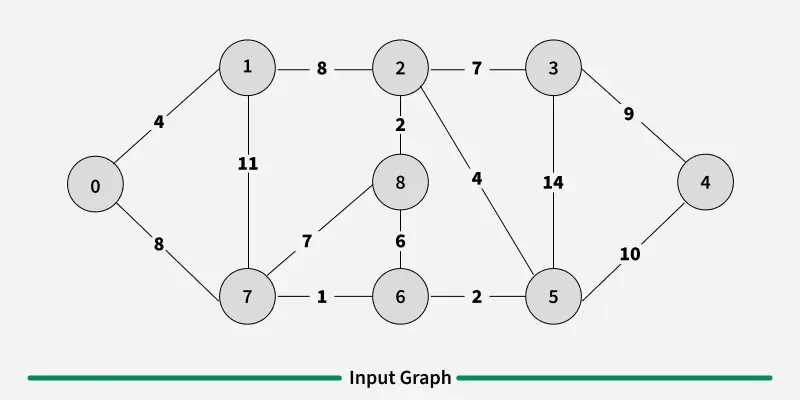
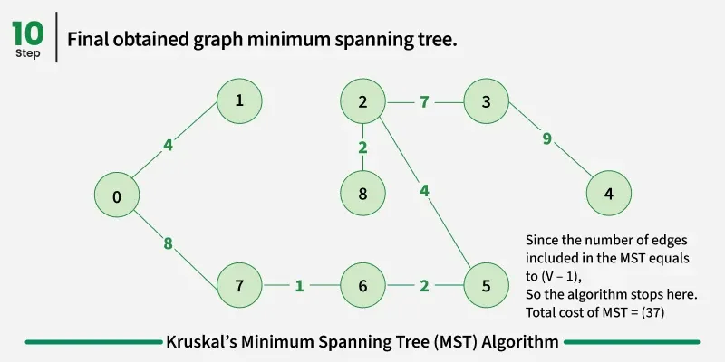

Context
A minimum spanning tree (MST) for a weighted, connected, undirected graph is a spanning tree (no cycles, connects every vertex) whose total edge weight is as small as possible. The weight of a spanning tree is the sum of its edge weights.
Steps to find an MST with Kruskal's algorithm:
- Sort all edges in non-decreasing order of weight.
- Consider edges in that order. Take the smallest edge next: if adding it would not form a cycle with edges chosen so far, include it; otherwise skip it. Cycle detection uses disjoint sets (union–find / DSU).
- Repeat until the tree has exactly (V − 1) edges (a spanning tree on
Vvertices).
Kruskal's is edge-centric: sort first, then merge components. That matches what union–find tracks. For contrast, Prim's grows from one vertex with a priority queue — same MST problem, different view of the graph.

0–8): Kruskal's processes edges lightest-first.
V − 1 = 8 edges; total weight 4 + 8 + 1 + 2 + 4 + 2 + 7 + 9 = 37.Code
find (path compression) and union (by rank) are the DSU backbone here — Kruskal's uses them on every edge decision.
Copy the full solution in one click from the window toolbar.
import java.util.*;
class Solution {
int[] parent;
int[] rank;
// Find with Path Compression
public int find(int x) {
if (x == parent[x]) return x;
return parent[x] = find(parent[x]);
}
// Union by Rank
public void union(int x, int y) {
int px = find(x);
int py = find(y);
if (px == py) return;
if (rank[px] > rank[py]) {
parent[py] = px;
} else if (rank[px] < rank[py]) {
parent[px] = py;
} else {
parent[px] = py;
rank[py]++;
}
}
// KRUSKAL
public int spanningTree(int V, int E, int edges[][]) {
// Step 1: sort edges by weight
Arrays.sort(edges, (a, b) -> a[2] - b[2]);
parent = new int[V];
rank = new int[V];
// initialize DSU
for (int i = 0; i < V; i++) {
parent[i] = i;
rank[i] = 0;
}
int mstWeight = 0;
// Step 2: process edges
for (int i = 0; i < E; i++) {
int u = edges[i][0];
int v = edges[i][1];
int wt = edges[i][2];
// Step 3: check cycle
if (find(u) != find(v)) {
mstWeight += wt;
union(u, v);
}
}
return mstWeight;
}
}